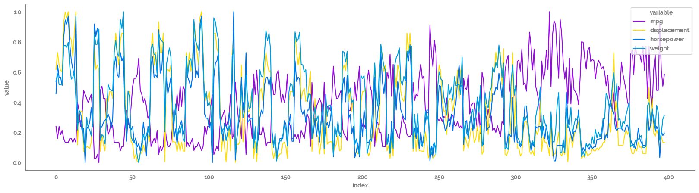
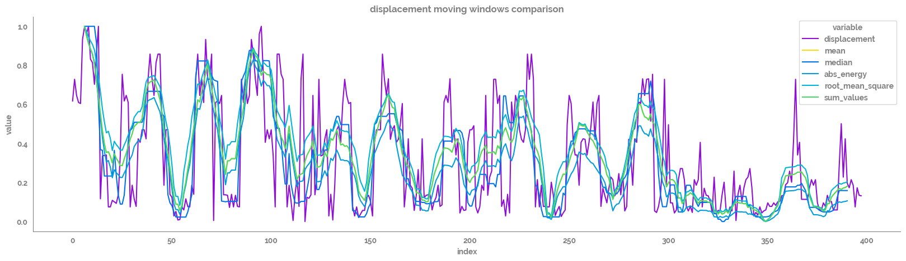

Testing out rolling smoothing functions¶
[140]:
import pandas as pd
import numpy as np
import matplotlib.pyplot as plt
import seaborn as sns
from jmspack.utils import apply_scaling
from sklearn.metrics import mean_squared_error
from tsfresh.feature_extraction.feature_calculators import (abs_energy, agg_autocorrelation,
agg_linear_trend, benford_correlation,
kurtosis, skewness, mean_change,
mean_second_derivative_central,
root_mean_square, sample_entropy,
sum_values, variation_coefficient)
[11]:
if "jms_style_sheet" in plt.style.available:
plt.style.use("jms_style_sheet")
[3]:
df = sns.load_dataset("mpg")
[4]:
df.head()
[4]:
| mpg | cylinders | displacement | horsepower | weight | acceleration | model_year | origin | name | |
|---|---|---|---|---|---|---|---|---|---|
| 0 | 18.0 | 8 | 307.0 | 130.0 | 3504 | 12.0 | 70 | usa | chevrolet chevelle malibu |
| 1 | 15.0 | 8 | 350.0 | 165.0 | 3693 | 11.5 | 70 | usa | buick skylark 320 |
| 2 | 18.0 | 8 | 318.0 | 150.0 | 3436 | 11.0 | 70 | usa | plymouth satellite |
| 3 | 16.0 | 8 | 304.0 | 150.0 | 3433 | 12.0 | 70 | usa | amc rebel sst |
| 4 | 17.0 | 8 | 302.0 | 140.0 | 3449 | 10.5 | 70 | usa | ford torino |
[5]:
feature_list = ["mpg", "displacement", "horsepower", "weight"]
Plotting original time series¶
[14]:
_ = plt.figure(figsize=(20, 5))
_ = sns.lineplot(data=df[feature_list]
.pipe(apply_scaling)
.reset_index()
.melt(id_vars="index"),
x="index",
y="value",
hue="variable"
)
_ = sns.despine()

Plotting smoothing functions¶
[47]:
comparison_feature = feature_list[1]
[144]:
assign_dict = {"mean": lambda d: d[comparison_feature].rolling(window=window_size).mean().shift(int(-window_size/2)),
"median": lambda d: d[comparison_feature].rolling(window=window_size).median().shift(int(-window_size/2)),
# "std": lambda d: d[comparison_feature].rolling(window=window_size).std().shift(int(-window_size/2)),
# "min": lambda d: d[comparison_feature].rolling(window=window_size).min().shift(int(-window_size/2)),
# "max": lambda d: d[comparison_feature].rolling(window=window_size).max().shift(int(-window_size/2)),
"abs_energy": lambda d: d[comparison_feature].rolling(window=window_size).agg(abs_energy).shift(int(-window_size/2)),
# "mean_change": lambda d: d[comparison_feature].rolling(window=window_size).agg(mean_change).shift(int(-window_size/2)),
# "mean_second_derivative_central": lambda d: d[comparison_feature].rolling(window=window_size).agg(mean_second_derivative_central).shift(int(-window_size/2)),
"root_mean_square": lambda d: d[comparison_feature].rolling(window=window_size).agg(root_mean_square).shift(int(-window_size/2)),
"sum_values": lambda d: d[comparison_feature].rolling(window=window_size).agg(sum_values).shift(int(-window_size/2)),
# "variation_coefficient": lambda d: d[comparison_feature].rolling(window=window_size).agg(variation_coefficient).shift(int(-window_size/2)),
# "sample_entropy": lambda d: d[comparison_feature].rolling(window=window_size).agg(sample_entropy).shift(int(-window_size/2)),
# "benford_correlation": lambda d: d[comparison_feature].rolling(window=window_size).agg(benford_correlation).shift(int(-window_size/2)),
# "kurtosis": lambda d: d[comparison_feature].rolling(window=window_size).agg(kurtosis).shift(int(-window_size/2)),
# "skewness": lambda d: d[comparison_feature].rolling(window=window_size).agg(skewness).shift(int(-window_size/2)),
# "agg_autocorrelation": lambda d: d[comparison_feature].rolling(window=window_size).agg(agg_autocorrelation, param={"f_agg": "mean", "maxlag": 1}).shift(int(-window_size/2)),
# "agg_linear_trend": lambda d: d[comparison_feature].rolling(window=window_size).agg(agg_linear_trend).shift(int(-window_size/2)),
}
[145]:
window_size=14
_ = plt.figure(figsize=(20, 5))
_ = sns.lineplot(data=df[[comparison_feature]]
.assign(**assign_dict)
# .drop(comparison_feature, axis=1)
.pipe(apply_scaling)
.reset_index()
.melt(id_vars="index"),
x="index",
y="value",
hue="variable"
)
_ = plt.title(f"{comparison_feature} moving windows comparison")
_ = sns.despine()

Comparing smoothed data to real data using RMSE()¶
[146]:
def RMSE(true, pred):
return np.sqrt(mean_squared_error(y_true=true, y_pred=pred))
[147]:
comp_df = (df[[comparison_feature]]
.assign(**assign_dict)
.pipe(apply_scaling)
.dropna()
)
rmse_df = pd.concat([pd.DataFrame({f"{comparison_feature}": RMSE(comp_df[comparison_feature], comp_df[y])}, index=[y]) for y in comp_df.drop(comparison_feature, axis=1)])
_ = plt.figure(figsize=(2,2))
_ = sns.heatmap(data=rmse_df,
annot=True,
fmt=".4g",
cmap="Blues")
_ = plt.yticks(rotation=0)